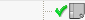

图纸节点
图纸节点为您提供部件图纸页、成员视图、剖切线、以及表格的可视化的分层树状结构显示，图纸节点在部件导航器中可以看到。
-
在资源条上，点击部件导航器 选项卡。
-
固定部件导航器。
当图纸节点展开时，您将看到在它下方每一个独立图纸页的节点，并且在各个图纸页节点中，会有该图纸页中每一个成员视图的节点。
 图纸
图纸
图纸页 “Sheet 1” (工作的—活动的)
 导入的 “TFR-TRI@3”
导入的 “TFR-TRI@3”
 导入的 “TOP@1”
 投影 “ORTHO@2”
投影 “ORTHO@2”
随着课程的进行，您将看到许多制图应用模块中的可用选项也可以通过右击图纸相关的节点开始。